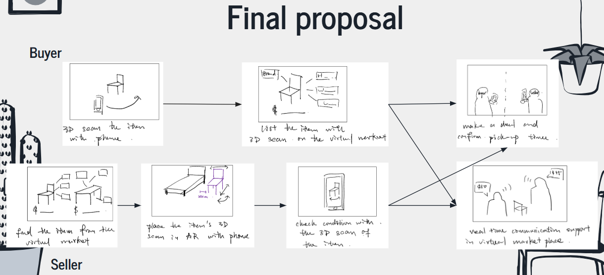

Project 3: Social Extended Reality (XR) for Local Community
By Lam Yeung Kong Sunny
-Empathy
In the empathy process, our group tried to see is there any concerns while community is taking part in event that is related to buying second hand furniture. Hence, we have conducted a survey using google form and send to people. The questions are following:
Have you ever bought or sold second-hand furniture in Hong Kong? (Single selection)
What platform(s) did you use for your last second-hand furniture transaction? (Multi answer)
What challenges did you face during that transaction? (Short answer)
How important is it for you to visualize furniture in your space before buying? (Short selection)
Would you use an app that lets you preview second-hand furniture in your home using your phone camera (AR) ? (Single Selection)
If you were selling, would you be willing to scan your furniture using your phone to create a 3D model? (Single Selection)
After gathering data from 17 people, we found out that almost 90% of them bough or sold second-hand furniture and majority of them have used online trading platforms, like carousel, which is a common way nowadays and follow by face-to-face transaction, around 41%. And most of them experienced transaction worried about the condition of the furnitures , the size to carry, the unmatching size for the horse and the distance to go to the shop.
The summary of the problem raised can be summarized in following table.
Based on the problems, we observe the needs to be able to do visualization of the furniture in a virtual space and one possible solution is to use AR app to preview furniture and use 3D models instead of photo only.
In addition, we also do observation in a local Hong Kong shop near the Prince Edward MTR station inside Pioneer Centre.
We walked in and observed that most furniture are large in size, which means that people need to measure the space required before going to the store. It will spend lots of time cost. By pretending to be customer, we ask the stuff for help as we do not record the space measurement and unsurprisingly the stuff cannot help us as they cannot go to our horse and measure! Right ?
We also made a GOMS model to interpret the current solution and operations for buying second hand furniture, namely the Facebook, Carousell and In person.
My contribution:
In the emphasis process, I send the google form to all my friends and motivate them to finish it. Also, I host the observation and record down the things that happened while we were visiting the shop. I also give suggestion while my groupmate was making the GOMS model, like the problems of current operations and potential solution for the problems by changing some operations.
-Ideation
In the ideation, we first created 3 persona.
Based on the situation and scenario suggested in these persona, we constructed the POV that was considered with ideals and constraints in following:
User:
Primary User: Hong Kong residents who want to buy second-hand furniture
Secondary User: Seller and people who sell second-hand furniture
Need:
Buyer: They want accurate visualization of furniture before buying furnitures. Do not want to waste money or time that don’t work.
Seller: They want solution that do not reply on 2D photo, like 3D model. And the models need to be visually appealing to demonstrate the furniture. In addition, we want to reduce refund due to unfitting size in buyer’s home.
Insight:
Hong Kong space is constrained, which make buying and selling furniture a challenge. Buyer is struggled to image the size and seller find it difficult to present object effectively.
Based on above, we brainstorm a lot of solutions and present them in a mindmap.
User Involvement:
Gamification Elements: Enhancers of user participation as rewards, for example coupons for logging in daily.
Interactive Product Demos: Enables users to do virtual try-ons of furniture.
Customization and Help:
Design Modification of Furniture: Users may change colors or customize features on furniture.
Virtual Guides: Walk users through the shopping journey.
User Responses:
User Feedback and Reviews In VR: Allows users to view assessed products alongside other users feedback.
Technology Use in Furniture Shopping:
Furniture AR Scanning: Uses augmented reality to scan and show furniture pieces to the user.
Furniture AR Showing: Enhances the shopping experience by previewing how the furniture would look in the user’s room.
Marketplace Functions:
Marketplace Put Up Users Furniture: Users are able to upload furniture they wish to sell.
Condition Checking: Enables users to confirm the state of items prior to purchase.
Room Fitting: Helps users see how furniture will fit in their space.
We have drawn storyboard of existing solution and our initial solution.
For existing solution, buyer’s step is as follows:
Scroll online and pick an furniture in online platform
Measure the current space
Conform the size and condition with the seller
Check the furniture offline and make the deal
For seller’s step:
Take a picture of the furniture
Measure the size of the furniture
Post image and the detail of the furniture to the online platform
Follow the step of 3 and 4 from buyer’s step in a seller’s position.
For initial solution, buyer’s step is as follows:
Find the furniture from the XR virtual market where the furniture is presented as images in the market.
Place the furniture’s 3D model in the house using AR functionality in phone.
Buyer can also check the condition with the 3D scan of the furniture
Make a deal and confirm pick up time
For seller’s step:
3D scan the furniture with a phone.
List the furniture with detailed information with 3D scan on the virtual market by attaching a image on the wall.
Make a deal with buyer and confirm pick up time with buyer
After finishing the storyboard, we do speed dating and collect the opinions from people. People tend to suggest that 3D models should be placed in the virtual market instead of photos to let buyers and sellers to have more immersive experience while walking around the virtual market. That’s why we change the storyboard and finalized the proposal.

Eventually, the prototype details are below:
1. Scanning
a. Scanning furniture using AR applications to get the 3D model data by seller.
b. Let the AR application loads the details.
c. Upload to the virtual market
2. Virtual Markrt
a. Virtual Market is built using Unity and spatial toolkit
b. Buyer walk around the market
c. Communicate with the seller if certain furniture is suitable.
d. Include functionalities like point of interest and trigger event etc, allow buyer to check the furniture condition and interact with the furniture.
3. Placing
a. Buyer get the 3d Model data from virtual market.
b. Use the AR application again for placing the furniture in the house this time.
c. If the virtual furniture is fitted in the house, buyer can make a deal and confirm the pick up time with the seller
In the ideation process, I was responsible for the persona creation after getting the feedback from the emphasis stage. I analyze the needs for both buyers and sellers and create persona to represent them. Based on the personas, I discussed them with my groupmate and concluded the ideals and constraints by making POV, i.e. user, need and insight. In addition, I also give suggestions while my groupmates were making mindmap and storyboard. Lastly, I invite my friend who has experience in moving house to express the opinion based on the initial solution storyboard and existing solution storyboard, which establish the fundaments of brainstorming finalized proposal.
-Usability test
The focus of this usability test centers around gauging a software platform’s prototype with a skeletal framework intended to demonstrate its most vital feature, which includes furniture capturing, virtual market placers, and AR placement. The participants will take part in user interaction scenarios which will let them place themselves in the system without having an operational version of the platform.
Important Features of the Usability Test:
Prototype Type:
A software designed to demonstrate the most crucial attributes of the platform.
Enables users to experience bounded simulations of interactions.
Retrospective Think Aloud Protocol:
Involves three users who, after engaging with the prototype will reflect and provide feedback.
Users will be encouraged to express their thoughts as they watch a video of their interaction, reflecting on usability, feature evaluations, concerns, and expectations.
Document:
Feedback will be captured documenting user comments during and post their interactions detailing their reflections.
This usability test seeks to collect pertinent evaluation data from users in order to design the platform better and improve user experience.
The result as follows:
People think the idea is innovative
Much lower time cost compare to going to store directly
High satisfaction overall
Below is one of the retrospective think aloud protocol example for a user:
I have taken part in participating in designing the usability test, including using Retrosecptive Think Aloud Protocol and decide the prototype the usability test to be used.
-Qualitative User Evaluation
1. Organization of Data
First, we organize the data by turning the recording result from the usability test into transcript, i.e. video to text
2. Inductive Approach and Coding
Below is the self implemented Coding book
3. Descriptive Analysis
Below is the table for descriptive analysis
4. Based on the descriptive analysis, we can induce a second order analysis
This evaluation allows us to find out the casualty.
My contribution:
I was responsible for leading this part, meaning I am the one to do evaluation based on data and concluded the results.
-Reflection
This project offered learning opportunities on how technology can resolve issues associated with second-hand furniture dealing. The empathy stage identified several major drawbacks for buyers and sellers, including furniture spatial limitations, visualization challenges, and inefficiencies with existing platforms. The ideation phase showcased the ability to apply AR and 3D modeling with more advanced virtual marketplaces and improved user experience through better visualization and interaction with furniture.
My participation in user research, personas, and usability tests exposed me to varying aspects of user-centered design and iterative solution development. Notably, observing user feedback from speed dating and Retrospective Think Aloud Protocol mechanics reinforced the need to refine solutions based on actual feedback.
Users noted in the usability test that the prototype's primary functions of AR furniture placement and virtual market constituted innovative time savers. Moreover, within the qualitative evaluation, I performed the lead coding and analysis and affirmed through the evaluation that structured data analysis yields answers to design deficits and solves for the user’s needs.
Additionally, this project improved my collaborative, research, and analytical skills while demonstrating how effective empathy-driven design integrated with technology solves challenges in real-world application. It reinforced the iterative cycle on user-centered design.